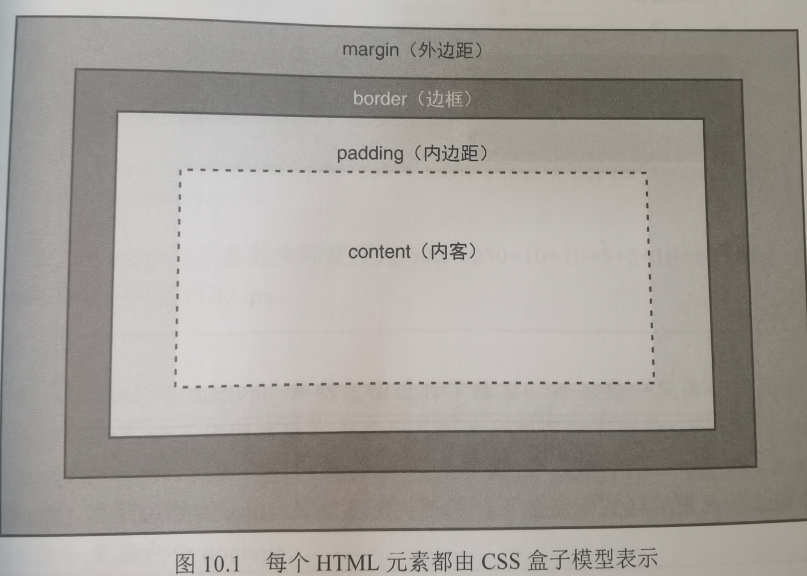
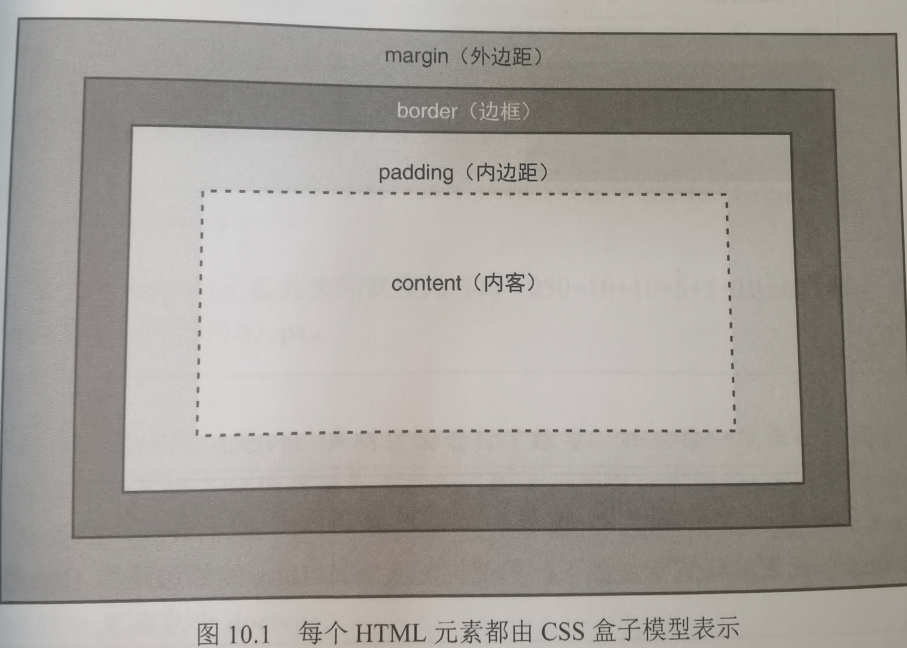

10.理解CSS盒子模型和定位
10.1 CSS盒子模型
HTML所有的元素都被视为一个"盒子"

由外到内分别是margin(外边距),border(边框),padding(内边距),content(内容)
元素的页面上实际占据的尺寸:
宽度 = width + padding-left + padding-right + border-left + border_right + margin-left + margin-right;
高度 = height + padding-top + padding-bottom + border-top + border-bottom + margin-top + margin-bottom;
还有一组特殊的额属性:轮廓属性,位置和border类似,他不会占用盒子模型中的任何空间,反过来会挤压内容部分
对应的选项有outline.outline-width,outline-style,outline-color,outline-offset.

由外到内分别是margin(外边距),border(边框),padding(内边距),content(内容)
元素的页面上实际占据的尺寸:
宽度 = width + padding-left + padding-right + border-left + border_right + margin-left + margin-right;
高度 = height + padding-top + padding-bottom + border-top + border-bottom + margin-top + margin-bottom;
还有一组特殊的额属性:轮廓属性,位置和border类似,他不会占用盒子模型中的任何空间,反过来会挤压内容部分
对应的选项有outline.outline-width,outline-style,outline-color,outline-offset.
10.2 更改盒子模型
rem:相对于font-size的尺寸
em:相对于当前标签字体的尺寸
特殊的更改盒子模型的属性box-sizing:
content-box:默认值,仅分配给内边距+内容框
border-box:内容加外边距+边界框作为盒子的宽度和高度值
em:相对于当前标签字体的尺寸
特殊的更改盒子模型的属性box-sizing:
content-box:默认值,仅分配给内边距+内容框
border-box:内容加外边距+边界框作为盒子的宽度和高度值
10.3 整体定位
相对定位属性display:
block:作为块,所以其他元素会在另外一行上显示
inline:在同一行
绝对定位属性:position
relative:相对于其他元素的位置进行定位
absoulute:绝对位置,相对于容器元素定位
fixed:固定位置,相对于浏览器窗口的位置
static:静态位置,正常显示,默认位置
sticky:根据滚动位置在relative和fixed切换
指定好了类型之后,可以使用left,right,top,bottom来指定具体的位移距离.
block:作为块,所以其他元素会在另外一行上显示
inline:在同一行
绝对定位属性:position
relative:相对于其他元素的位置进行定位
absoulute:绝对位置,相对于容器元素定位
fixed:固定位置,相对于浏览器窗口的位置
static:静态位置,正常显示,默认位置
sticky:根据滚动位置在relative和fixed切换
指定好了类型之后,可以使用left,right,top,bottom来指定具体的位移距离.
10.4 重叠顺序
使用:z-index:数值;
指定绘制顺序,值小的优先绘制.
指定绘制顺序,值小的优先绘制.